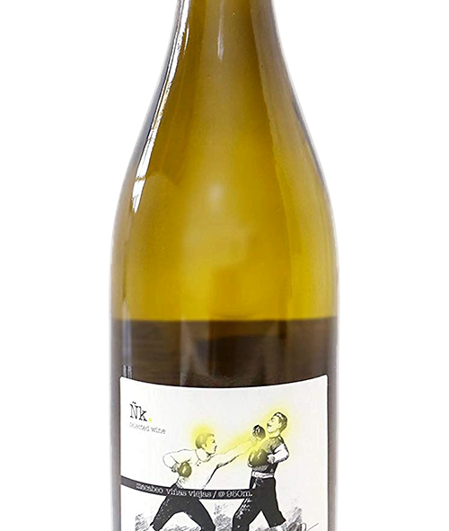

carefully curated opinions about the best (and worst) bars, restaurants, hotels, recipes, art and design across the world
I judge wines by their label
ñk wines - Macabeo Blanco- $14

If you're new here, a word about this, "Judging Wines by their Label" section. I'm a designer, not a wine professional, but I drink a lot of it. As with anything I do in life, it's never half assed, and so if I'm gonna drink wine I want to be knowledgable about it. That said, I know NOTHING about wine. Cocktails, yes. I can have a discussion about. Food, I know a thing or two. I know a lot about design, letterpress and branding. Wine... nope. I grew up in an Italian-American family with basket Chianti and gallon jugs of Carlo Rossi. I still put ice cubes in my red wine, (and no there's nothing wrong with that!). This section is a record of my attempts to write about wine in a slightly knowledgable, yet approachable way, while casting a very critical design eye to their packaging.
Looking for wines I love, that are hopefully cheap and preferably with eye catching design. Just a little ol' wine drinker me,
ñk wines
Macabeo Blanco
Calatayud - Spain
$14
About the winery: The idea for Nk wines was founded on a trip to Japan, when two Spanish winemakers decided to focus on small, organic, sometimes natural, wine producers of Spain. They contract limited editions, usually one growing season, and release them as "volumes". The look for easy drinking, fun wines your don't have to think too much about, but are unique. Their motto is "wine that will make you want to dance or punch you to the moon".
This is their white (blanco) volume 1.
The Wine
Nose: mossy mineral sweetness. The same you get with a lot of dry sake (nihonshu, for our Japanese readers). It's that kind of mountain dew smell. Not Mountain Dew..mountain dew. Get it?
Taste: mineral. a little butter sweetness. really crisp and easy drinking. I drank half a bottle while cooking dinner in the 95 degree heat. More refreshing than some provincial roses out there. Perfect for summer.
The Design:
I really love this label. It's graphic and eye catching with some splashes of bright color for highlights. The whole package has excellent shelf standoutability.
The only possible criticism I could have is they have a fino sherry and the label color is orange, making you think it's an "orange" or skin contact white wine, when it is not.
The Wine
- Smell: 8/10
- Taste: 8/10
- Overall Quality 8/10
- COSPA:‡ 7/10
The Design
- Typography 7/10
- Materials and finishing 7/10
- overall design 8/10
- shelf standoutability 9/10
- Bonus points: 4/5 (spot color!)
Giant Squid Overall score: 90 Points
‡ COSPA is a category I got from Tabelog, the Japanese restaurant review site. It stands for COSt PerformAnce and represent the perceived value for the money spent or quality vs price paid. It is totally subjective, and yet easily one of the most informative and referenced metrics.
These are also worth your time


A global branding , design & consulting agency from NYC, in Tokyo. We're big in Australia.